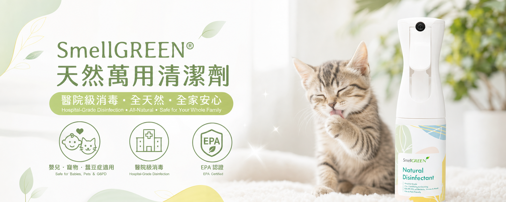

提高警覺
漂白水／次氯酸鈉
刺激性及殘留接觸風險。
建議：不作貓常接觸地面日常噴灑。
先查 5 類常見高風險成分，再睇一個可用於日常家居、寵物用品和地板的替代方案。所有清潔後表面都應完全風乾，先畀貓咪接觸。

日常安全使用重點
噴灑／清潔後，必須待表面完全風乾，才讓貓咪踩踏、舔毛或接觸物件。
15-SECOND LABEL CHECK
5 個清潔成分關鍵字
刺激性及殘留接觸風險。
建議：不作貓常接觸地面日常噴灑。

常見於消毒噴霧、濕紙巾。
建議：避免讓貓接觸未乾表面。

部分傳統消毒產品常見。
建議：貓家庭不作首選。

氣味及呼吸道刺激問題。
建議：避免密閉空間使用。

貓對濃烈氣味較敏感。
建議：不要以「香」當作「乾淨」。
見到上述成分？下一步不是停止清潔。
轉用成分與使用步驟清楚的日常方案，並堅持「完全風乾後再讓主子接觸」。
如果你已經檢查到屋企常用產品含有漂白水、季銨鹽、酚類、阿摩尼亞或濃烈香精，下一步不是不清潔，而是換成一個適合每日用、成分與使用方法更清楚的方案。
LOW-FRICTION ROUTINE
免稀釋。按需要噴灑在硬表面、常接觸物件或寵物用品表面。
按產品標示的用途與接觸時間操作；不要自行縮短產品所需的濕潤時間。
貓咪可在表面乾透後如常活動；避免讓幼兒或寵物接觸仍然濕潤的表面。
香港現貨｜40mL 套裝、200mL、1 Gallon 選擇｜實際售價、優惠及庫存請以產品頁為準。
產品有效成分為 Thymol、100% 植物萃取物，配方不含有毒成分。地面乾透後，寵物即可安全行走。
清潔時噴灑並擦拭；如需消毒，按產品指示讓表面保持濕潤，再讓它風乾或依指示擦拭。
產品不可吞食。任何清潔用品使用後，都應避免寵物接觸仍濕的地面、玩具、食具或其他物件。
FAQ
先避開常見高風險成分，再建立正確的日常清潔習慣
選擇配方與使用步驟清楚的產品，並把「完全風乾後才讓貓接觸」變成每次清潔後的固定習慣。
立即查看安全替代方案